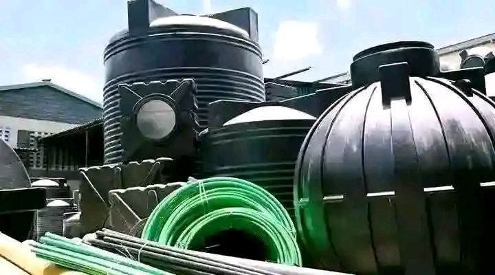
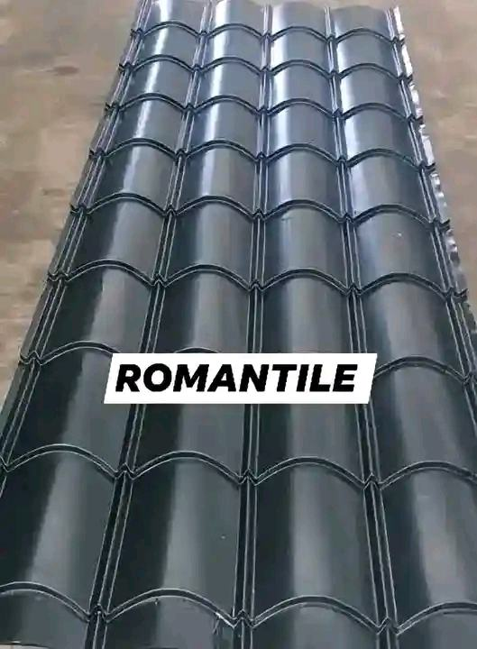

Build Better. Live Better.

Mwananchi Supplies Limited is a Kenyan supplier of quality building and construction materials. From roofing mabati and water tanks to tiles, carpets, cabro and concrete mixers, we help homeowners, contractors and developers get everything for their project in one place.
We pride ourselves on honest pricing, reliable service and delivery to customers across all 47 counties.
Mabati in all popular profiles and gauges, water & septic tanks, HDPE and PVC pipes, paints, carpets and artificial grass, porcelain tiles, cabro paving and machines, fencing posts and moulds, concrete mixers, cement and sanitary ware.
Browse Products
To supply quality materials at fair prices that help Kenyans build better.
To be Kenya's most trusted construction supplies partner.
Integrity, reliability, quality and customer care.